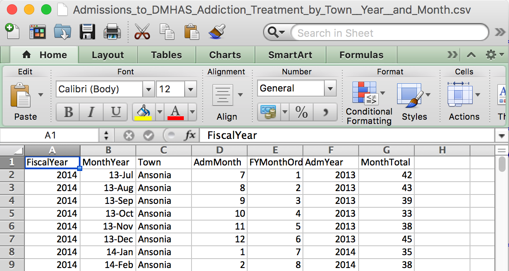
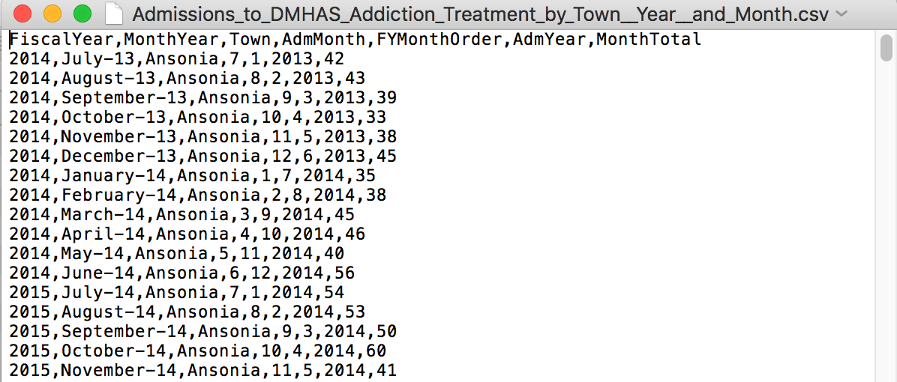
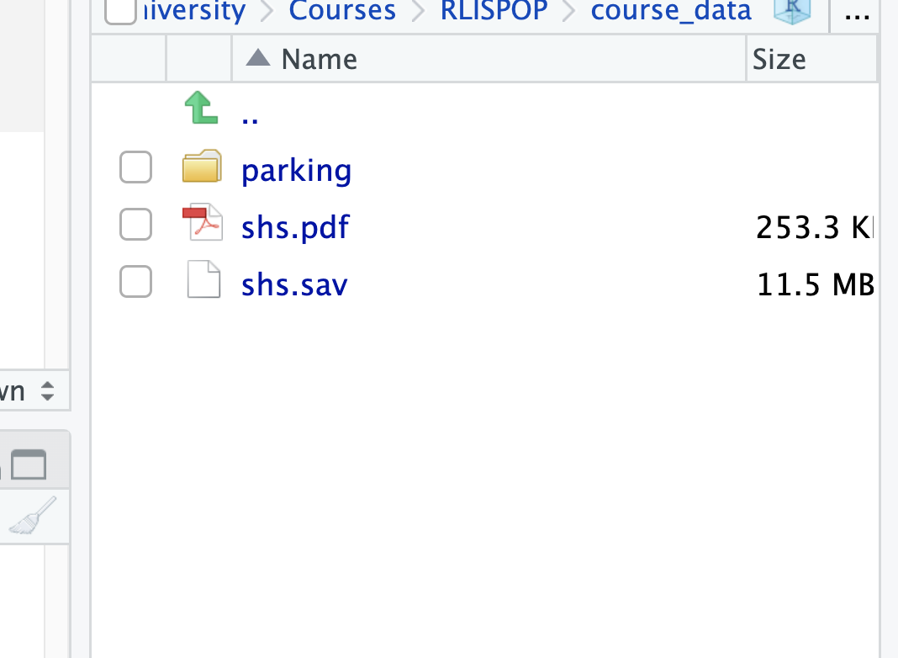
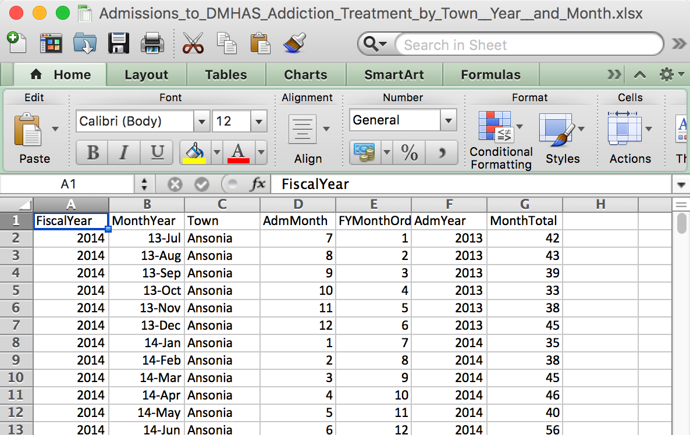
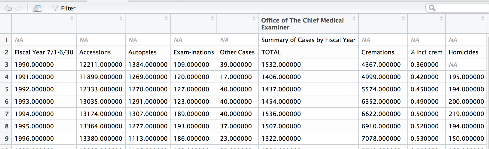
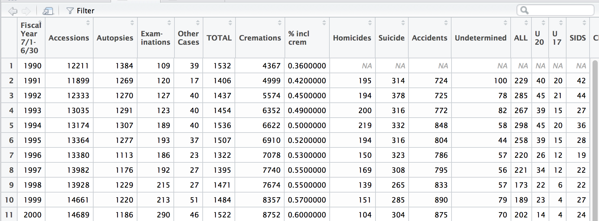
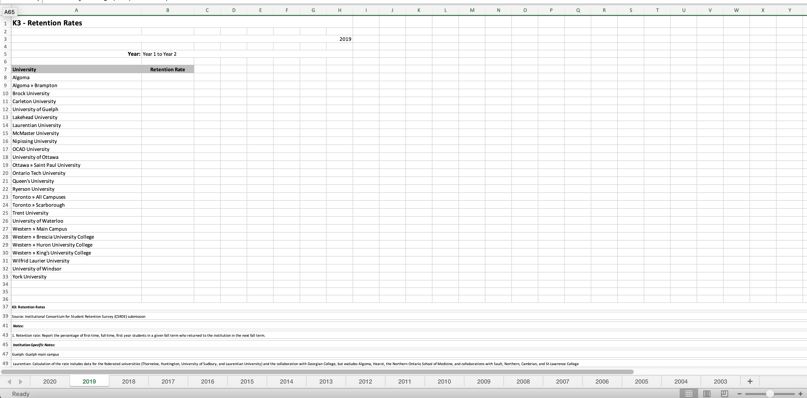
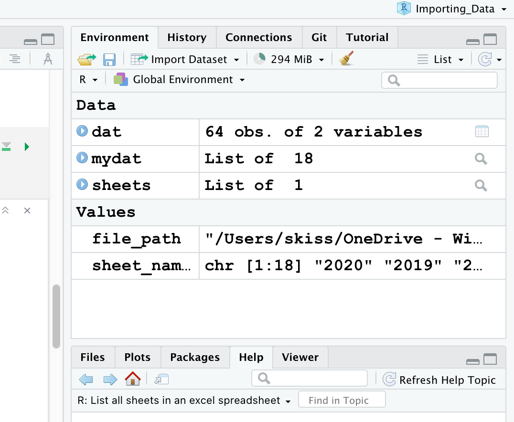

#General
library(tidyverse)
#For file paths
library(here)
#For cleaning names
library(janitor)
#For webscraping
library(rvest)
#For bulk csv and excel files
library(skpersonal)
#For reading excel files
library(readxl)
#For importing SPSS data
library(haven)
library(labelled)Importing Data
Importing Data
Load libraries
For this we will need the following libraries:
Comma separated files are the most common way to save spreadsheets that doesn’t require a paid program from Microsoft to open.
What a csv file looks like
CSV file names end with a .csv

What a csv file looks like on the inside
This explains the values separated with commas part of the file name.

Importing CSV files
read.csvis a function provided in base R.read_csvis a function provided in thereadr. Both work well.
We have stored a series of CSV files from the City of Toronto in the folder course_data/parking. Let’s import the first one. Note: the best way to access data in subfolders is to use the here() function in the here package
If you have not installed it, please do so.
#install.packages('here')
library(here)The here package provides just the here() command. Run it and see what it does.
here()[1] "/Users/skiss/Library/CloudStorage/OneDrive-WilfridLaurierUniversity/Courses/RLISPOP/03_Importing_Data"You can also combine here with .. to move up one directory!
here("..")[1] "/Users/skiss/Library/CloudStorage/OneDrive-WilfridLaurierUniversity/Courses/RLISPOP/03_Importing_Data/.."From there, you can navigate down one directory. We can use the command list.files() to list the files in a directory
list.files(here("../course_data/parking")) [1] "Parking_Tags_Data_2024_1.csv" "Parking_Tags_Data_2024_10.csv"
[3] "Parking_Tags_Data_2024_11.csv" "Parking_Tags_Data_2024_12.csv"
[5] "Parking_Tags_Data_2024_2.csv" "Parking_Tags_Data_2024_3.csv"
[7] "Parking_Tags_Data_2024_4.csv" "Parking_Tags_Data_2024_5.csv"
[9] "Parking_Tags_Data_2024_6.csv" "Parking_Tags_Data_2024_7.csv"
[11] "Parking_Tags_Data_2024_8.csv" "Parking_Tags_Data_2024_9.csv" We just add that first file name and append it to the path name we have developed and pass it to read.csv
df_csv <- read.csv(file=here("../course_data/parking/Parking_Tags_Data_2024_1.csv"))Bulk CSV
Sometimes we have to read in multiple csv files at once.
But with R, you can script that process. There is a custom function in the muckrakr package that does this really well. I have modified it a little bit and stored it in my own personal package skpersonal. This package is installed with the devtools package using the install_github command
Note: This assumes that each CSV file is structured in exactly the same way!!!!
# If you don't have devtools installed yet, uncomment and run the line below
#install.packages("devtools")
#devtools::install_github("sjkiss/skpersonal", force=T)
library(skpersonal)
library(here)The function we want to use is called bulk_csv().
It looks like this (Don’t run this command, it’s theoretical):
?bulk_csv
bulk_csv(folder = "DEFAULTBULKCSV2017", export = "filenamedefaultbulkcsv2018.csv"")Two arguments:
- folder - here you have to specify the folder that holds the CSV files you want to import. It’s always best to use the
here()command to get there. - export - File name to export csv file as, if wanted.
Alright, so the CSV files we want to import are stored in the course_data/parking folder

PRO-TIP
This package is based on readr, so passing on variables from read_csv will work in bulk_csv. These variables will apply to the import of each CSV sheet.
To create a new dataframe with all the data sets combined, the command would be:
library(here)
library(skpersonal)
#Check to see the files are there
#Notice the need to use here() combined with the .. to go up one directory
list.files(here('../course_data/parking')) [1] "Parking_Tags_Data_2024_1.csv" "Parking_Tags_Data_2024_10.csv"
[3] "Parking_Tags_Data_2024_11.csv" "Parking_Tags_Data_2024_12.csv"
[5] "Parking_Tags_Data_2024_2.csv" "Parking_Tags_Data_2024_3.csv"
[7] "Parking_Tags_Data_2024_4.csv" "Parking_Tags_Data_2024_5.csv"
[9] "Parking_Tags_Data_2024_6.csv" "Parking_Tags_Data_2024_7.csv"
[11] "Parking_Tags_Data_2024_8.csv" "Parking_Tags_Data_2024_9.csv" combined_data <- bulk_csv(folder=here('../course_data/parking'))
|
| | 0%
|
|====== | 8%
|
|============ | 17%
|
|================== | 25%
|
|======================= | 33%
|
|============================= | 42%
|
|=================================== | 50%
|
|========================================= | 58%
|
|=============================================== | 67%
|
|==================================================== | 75%
|
|========================================================== | 83%
|
|================================================================ | 92%
|
|======================================================================| 100%Importing Excel Files
Excel spreadsheets are unique in that they can contain multiple spreadsheets as a workbook.
What an Excel file looks like
Excel file names end with a .xls or .xlsx

Importing Excel files
- Importing Excel is complicated, readxl package is needed
- There are more other packages that handle Excel files and can build extra sheets, but we won’t be needing them for this instance
Unlike a csv, you can’t just copy and paste the URL for an Excel sheet.
You gotta download the file first. For now, I’ve provided the excel file in the data subfolder. For your own use, you should be prepared to save excel spreadhseets to a similar subfolder.
read_excel()
Excel spreadsheets have multiple sheets and it’s best to explore what it looks like in Excel first because read_excel() requires specific sheets to be referred to when importing.
Give it a shot with the first sheet.
df_xl <- read_excel("../course_data/StatisticsSummary.xls", sheet=1)Check it
View(df_xl)
This isn’t right.
The problem with Excel files is that people love to format it in ways that make it look nice in Excel but makes no sense in R.
read_excel() again
But this time we’ll add skip=2 so it skips the first rows when bringing in the data.
df_xl <- read_excel("data/StatisticsSummary.xls", sheet=1, skip=2)Much better
View(df_xl)
Warning: Notice that the column names are preserved with spaces and symbols.
# the names() function lists the column names of the dataframe
names(df_xl) [1] "Fiscal Year 7/1-6/30" "Accessions"
[3] "Autopsies" "Exam-inations"
[5] "Other Cases" "TOTAL"
[7] "Cremations" "% incl crem"
[9] "Homicides" "Suicide"
[11] "Accidents" "Undetermined"
[13] "ALL" "U 20"
[15] "U 17" "SIDS"
[17] "Clinicals" So how would one refer to the data in the columns with spaces
If we did it like normal with the $ to pull the column we’d try
head(df_xl$Other Cases)Error in parse(text = input): <text>:1:18: unexpected symbol
1: head(df_xl$Other Cases
^See, spaces won’t work. This is how to deal with columns with spaces– add the back tick next to the 1 button on your keyboard.
head(df_xl$`Other Cases`)[1] 39 17 40 40 40 37It’s some extra finger work that you might be okay with if it was in a limited basis.
However, in anticipation of the work we’re going to be doing, we should go ahead and simplify the column names so there are no characters or spaces. Here’s how
Bulk Excel files
Same concept as above, but the function name is bulk_excel().
One Excel workbook with multiple worksheets
Sometimes, we have a situation where we have one Excel workbook with multiple worksheets. In some situations, one worksheet

dat<-read_excel(here("../course_data/cudo.xlsx"), sheet=3)What happens though if we want to import multiple sheets?
The first thing we do is to make an object that is a file path to where the Excel workbook is stored.
file_path<-here("data/cudo.xlsx")Now, we need to use the function excel_sheets() to get the names of each worksheet in the workbook. We will store them in an object called sheet_names.
sheet_names<-excel_sheets(file_path)now, we will do something quite fancy which is to loop over each item in sheet_names with the map() function and run the function read_excel and we will supply the argument file_path to read_excel.
So basically we will be telling R to go to the file location where our excel workbook is, read in the worksheet with the first name, then go and do it again and do it again.
mydat<-map(sheet_names, read_excel, path=file_path)Now look in the top right corner, you should see something that looks like the object mydat.

If we look at it, we can see that there are some problems. Namnely there is junky white space above the data that we really need and there is a bunch of junky stuff below all the fun data that we don’t need.
If you pull up the help file for read_excel then you can look at some of the options that you can set.
?read_excelSpecifically, you can order Excel to skip some lines.
Inspecting the raw workbooks. We can count that the first six rows are junk and everything past row 33 is junk. Two arguments can help us skip and n_max. skip says how many rows to skip over and n_max says to read at most that number of rows. So, we can want to start at Row 7 (so skip=6) and we want to stop at Row 33, so n_max 33-7 (26).
mydat2<-map(sheet_names, read_excel, path=file_path, skip=6, n_max=26)Now, we are not quite done yet. If we call class() on our new precious we will see it is a list.
class(list)[1] "function"This means that each year’s data is really stored as a separate item.
If each data-set in each list item is excactly the same, and thankfully, it appears to be the case in this data-set, then we can easily smush them together in one function.
Let’s test this.
Right now, we have 18 list items of 26 rows each.
18*26[1] 468So, in total we have 468 rows of data. We can use the bind_rows() function which literally just ….binds all the rows together (assuming they are the same type of columns!!)
mydat3<-bind_rows(mydat2)And how many rows do we have now?
nrow(mydat3)[1] 468Ta-da! Nicely smushed together!!!
But wait, it gets better. Now, unfortunately, we have lost the very valuable information about which year each row of data comes from.
No fear: We can modify the bind_rows() function like this.
?bind_rowsWe can use the .id argument to specify a new variable that will be filled with the values of the name of the list. And remember, we named each list item from the year of the data!!! So, we can do:
mydat3<-bind_rows(mydat2, .id="Year")Now we have a whole data frame showing the retention rates for each Ontario university from 2003 to 2012.
summary(mydat3) Year University Retention Rate
Length:468 Length:468 Min. :0.7640
Class :character Class :character 1st Qu.:0.8560
Mode :character Mode :character Median :0.8790
Mean :0.8771
3rd Qu.:0.9000
Max. :0.9700
NA's :154 And if we look at the actual variable Retention Rate, we see that it has been miraculously been imported not as a character string with a junky percent sign you would have to deal with, but as a proper number, i.e. 50% is 0.5000. You might consider multiplying that by 100 and saving it in a new variable, but we’ll get there.
mydat3$`Retention Rate` [1] NA NA NA NA NA NA NA NA NA NA NA NA
[13] NA NA NA NA NA NA NA NA NA NA NA NA
[25] NA NA NA NA NA NA NA NA NA NA NA NA
[37] NA NA NA NA NA NA NA NA NA NA NA NA
[49] NA NA NA NA NA NA NA NA NA NA NA NA
[61] NA NA NA NA NA NA NA NA NA NA NA NA
[73] NA NA NA NA NA NA 0.878 NA 0.878 0.884 0.910 0.833
[85] 0.868 0.916 0.845 0.922 0.876 0.764 0.825 0.945 0.885 0.920 0.891 0.850
[97] 0.936 0.934 0.890 0.875 0.810 0.873 0.874 0.882 NA NA 0.875 0.889
[109] 0.909 0.832 0.851 0.910 0.845 0.923 0.872 NA 0.811 0.947 0.884 0.917
[121] 0.900 0.835 0.939 0.932 0.927 0.800 0.886 0.880 0.883 0.865 NA NA
[133] 0.875 0.882 0.906 0.859 0.826 0.909 0.822 0.889 0.886 NA 0.799 0.947
[145] 0.896 0.913 0.881 0.844 0.936 0.932 NA NA 0.859 0.881 0.885 0.856
[157] NA NA 0.876 0.881 0.923 0.814 0.845 0.903 0.845 0.829 0.872 NA
[169] 0.803 0.942 0.888 0.917 0.883 0.845 0.932 0.933 0.923 0.876 0.860 0.887
[181] 0.857 0.870 NA NA 0.870 0.874 0.919 0.832 0.844 0.899 0.818 0.849
[193] 0.873 NA 0.794 0.948 0.885 0.921 0.898 0.830 0.923 0.925 0.893 NA
[205] 0.860 0.867 0.851 0.848 NA NA 0.867 0.872 0.919 0.841 0.831 0.903
[217] 0.793 0.889 0.863 NA 0.792 0.946 0.875 0.920 0.891 0.828 0.919 0.932
[229] NA NA NA 0.876 0.852 0.854 NA NA 0.879 0.873 0.916 0.839
[241] 0.827 0.887 0.803 0.891 0.864 NA 0.772 0.945 0.858 0.912 0.884 0.841
[253] 0.908 0.928 0.941 NA 0.970 0.880 0.846 0.857 NA NA 0.872 0.874
[265] 0.911 0.853 0.860 0.868 0.820 0.887 0.860 NA 0.824 0.940 0.857 0.913
[277] 0.877 0.839 0.904 0.932 0.805 0.851 NA 0.884 0.844 0.856 NA NA
[289] 0.875 0.879 0.916 0.878 0.856 0.873 0.829 0.882 0.861 NA 0.810 0.945
[301] 0.867 0.912 0.885 0.831 0.894 0.936 0.915 0.825 0.868 0.888 0.863 0.863
[313] NA NA 0.870 0.880 0.874 0.860 0.863 0.862 0.834 0.868 0.869 NA
[325] 0.827 0.936 0.831 0.909 0.886 0.819 0.890 0.927 0.915 0.887 0.880 0.892
[337] 0.869 0.868 NA NA 0.855 0.876 0.902 0.860 0.842 0.872 0.843 0.917
[349] 0.868 NA 0.802 0.949 0.889 0.904 0.905 0.806 0.879 0.919 0.877 0.885
[361] 0.911 0.898 0.823 0.868 NA NA 0.865 0.867 0.910 0.867 0.833 0.878
[373] 0.828 0.920 0.878 NA NA 0.947 0.874 0.900 0.889 0.815 0.883 0.911
[385] 0.886 0.885 0.877 0.889 0.823 0.879 NA NA 0.880 0.881 0.913 0.892
[397] 0.867 0.895 0.852 0.924 0.876 NA 0.848 0.933 0.870 0.894 0.880 0.850
[409] 0.884 0.925 0.881 0.770 0.873 0.888 0.825 0.879 NA 0.894 0.889 0.881
[421] 0.911 0.888 0.850 0.895 0.887 0.856 0.886 NA NA 0.944 0.896 0.900
[433] 0.859 0.820 0.890 0.915 0.894 0.871 NA 0.890 0.815 0.884 NA NA
[445] NA NA NA NA NA NA NA NA NA NA NA NA
[457] NA NA NA NA NA NA NA NA NA NA NA NAPotential pitfalls:
- There may be different numbers of rows in each worksheet, i.e. the data may be poorly formatted. If you set the same criteria for import here, it may miss some data.
- There may be hard to read characters somewhere (e.g. @, ! #)
SPSS Files
SPSS is a very popular software program for statistical analysis of social science data. It is often used to store survey data used by public opinion researchers and Statistics Canada because you can store survey responses as factors and not just as numbers as in csv files.
If you are looking at individual level data from Statistics Canada, you will often get data in this format.
Here, I’ve provided the 2017 version of Statistics Canada’s Survey of Household Spending. It is in the data subfolder.
list.files(path=here('data'))[1] "combined_data.csv" "cudo.xlsx" "parking"
[4] "shs.pdf" "shs.sav" "StatisticsSummary.xls"We use the haven package to import SPSS files that have a .sav extension.
library(haven)
library(labelled)
shs<-read_sav(here('data/shs.sav'))One thing that is difficult with a lot of these big surveys is they ask a lot of questions, so it can be hard to find the variables you want. There’s nothing wrong with opening up the technical documentation that comes with teh file to search for which questions were asked. But haven provides a function that basically lets you search through the question texts which are techincaly known as variable labels.
lookfor(shs, 'internet') pos variable label col_type missing values
35 InternetYN Internet access chr+lbl 0 [1] Yes
[2] No
36 IntCon_HSTel Type of Internet connection - H~ chr+lbl 0 [1] Yes
[2] No
37 IntCon_Cable Type of Internet connection - C~ chr+lbl 0 [1] Yes
[2] No
38 IntCon_Wireless Type of Internet connection - W~ chr+lbl 0 [1] Yes
[2] No
39 IntCon_Other Type of Internet connection - O~ chr+lbl 0 [1] Yes
[2] No
77 CS007 Internet access services dbl 0
147 SH060 Communication and home security~ dbl 0 lookfor(shs, 'income') pos variable label col_type missing values
46 RP_TotInc Reference person - T~ dbl 0
48 RP_InvInc Reference person - I~ dbl 0
50 RP_OthInc Reference person - O~ dbl 0
51 SP_TotInc Spouse - Total income dbl 0
53 SP_InvInc Spouse - Investment ~ dbl 0
55 SP_OthInc Spouse - Other income dbl 0
56 OTH_TotInc Other persons - Tota~ dbl 0
58 OTH_InvInc Other persons - Inve~ dbl 0
60 OTH_OthInc Other persons - Othe~ dbl 0
61 HH_TotInc Household - Total in~ dbl 0
63 HH_InvInc Household - Investme~ dbl 0
65 HH_OthInc Household - Other in~ dbl 0
66 HH_MajIncSrc Household - Major so~ chr+lbl 0 [1] Earnings (employ~
[2] Investment income
[3] Government trans~
[4] Other income
[5] All sources = 0
172 TX001 Income taxes dbl 0 lookfor(shs, 'rent') pos variable label col_type missing values
4 HHType6 Household type chr+lbl 0 [1] One person househo~
[2] Couple without chi~
[3] Couple with childr~
[4] Couple with other ~
[5] Lone parent family~
[6] Other household wi~
24 Tenure Dwelling tenure chr+lbl 0 [1] Owned with mortgage
[2] Owned without mort~
[3] Rented
127 SH003 Rented principal resid~ dbl 0
128 SH004 Rent dbl 0
150 SH990 Other expenses for ren~ dbl 0
153 TC001_C Total current consumpt~ dbl 0
161 TR020_C Rented vehicles - Inte~ dbl 0
162 TR021 Rental fees for vehicl~ dbl 0 You can also do a View() and look at the whole document.
View(var_label(shs))Labelled Variables Versus Factors
In the first lesson, we learned about numeric, character and factor variables. Here I need to introduce a slightly new tuype of variable: a labelled variable. Labelled data are extremely common in GUI software like SPSS. Effectively, labelled data attach labels to numbers to commmunicate to users what each number stands for. For example, in SPSS you might have a numeric variable that comes from a Likert question (e.g. Strongly agree to strongly disagree). The strongly agree might be stored as a 1, the agree might be stored as a 3, disagree as a 5 and strongly disagree stored as a 7.
However, you will also often have values that reflect a Don't know or a refused to answer. These might be represented with a 9 or a 99. In labelled data (and often in SPSS) users can choose to select particular labels as missing data. For example, you can specify
In R, the closest equivalent to labels is the factor levels. The thing is, factor levels only sets missing values as NA. There is no way to have a Don't Know level that is stored as Don\t Know but be treated as missing. If you want to ignore `Don't Know’ answers with factors they must be set to NA.
After importing a file from SPSS, the variables are all treated as some version of labelled. Let’s take a look. In R, we almost never work with labelled() variables, they must almost always be converted to their native R class: numeric or factor.
shs %>%
select(Prov, HHType6, HH_TotInc) %>% head()# A tibble: 6 × 3
Prov HHType6 HH_TotInc
<chr+lbl> <chr+lbl> <dbl>
1 14 [Atlantic provinces] 3 [Couple with children] 100050
2 24 [Quebec] 3 [Couple with children] 114250
3 47 [Saskatchewan] 2 [Couple without children] 52000
4 63 [Territorial capitals] 2 [Couple without children] 56050
5 14 [Atlantic provinces] 2 [Couple without children] 46500
6 59 [British Columbia] 3 [Couple with children] 133150Notice underneath each variable name is printed chr+lbl or maybe S3:haven_labelledfor the first two variables anddblfor the third? The first two variables arecharacterandlabelledvariables while the third is anumeric(dbl` is just a numeric variable with a decimal point).
Notice also that for the two labelled variables, you can see how there is a number 14 and a label Atlantic provinces stored there. That tells you that there are labels attached to each of the numbers there. That is very useful information. But there is another trick here: Those numbers are actually stored as characters!, i.e. it is not 1 it is "1". That is going to require a particular conversion and illustrates another problem that can pop up on import.
If you print one of the variables you get similar information. Let’s print the first 10 examples of HHType6
shs$HHType6[1:10]<labelled<character>[10]>: Household type
[1] 3 3 2 2 2 3 2 1 2 1
Labels:
value label
1 One person household
2 Couple without children
3 Couple with children
4 Couple with other related or unrelated persons
5 Lone parent family with no additional persons
6 Other household with related or unrelated personsNow, you can’t actually do much with variables that are stored as labelled. If you want to see what the distribution of responses is of the provinces, you can try table()
table(shs$Prov)
14 24 35 46 47 48 59 63
3870 1623 1637 1117 1058 1163 1426 598 But we don’t know here what 14 refers to.
So, we need to convert labelled variables to one of the native R categories of either a factor or sometimes to a numeric. There are multiple ways to do that and multiple times to do that.
- An easy way is to wrap a variable in
as_factor()from thelabelledpackage. It simply takes the labels and applies them to the numbers they are mapped to them and, done. However this only does this the one time.
table(as_factor(shs$Prov))
Atlantic provinces Quebec Ontario
3870 1623 1637
Manitoba Saskatchewan Alberta
1117 1058 1163
British Columbia Territorial capitals
1426 598 - Other times, you want to make a more permanent solution. Consider the `
HHType6variable.
table(as_factor(shs$HHType6))
One person household
3443
Couple without children
3749
Couple with children
3260
Couple with other related or unrelated persons
399
Lone parent family with no additional persons
881
Other household with related or unrelated persons
760 If we ever did a graph with those labels, yikes they are long. It will not look very pretty. Also, there are a lot of different categories. More often than not, we will want to collapse them. So, what we might do is recode this variable into another one stored as a factor. To do that, though, it’s going to save us a lot of time if we just recode the underlying numbers to some new factor category than to do that with converting Other household with related or unrelated persons to Other.
library(car)
val_labels(shs$HHType6) One person household
"1"
Couple without children
"2"
Couple with children
"3"
Couple with other related or unrelated persons
"4"
Lone parent family with no additional persons
"5"
Other household with related or unrelated persons
"6" class(shs$HHType6)[1] "haven_labelled" "vctrs_vctr" "character" shs %>%
mutate(household=case_when(
HHType6==1~'Single',
HHType6 >1~'Multiple'
)) Error in `mutate()`:
ℹ In argument: `household = case_when(HHType6 == 1 ~ "Single", HHType6 >
1 ~ "Multiple")`.
Caused by error in `case_when()`:
! Failed to evaluate the left-hand side of formula 1.
Caused by error in `vec_equal()`:
! Can't combine `..1` <double> and `..2` <character>.Notice the error. Becuase the 1 is actually a “1” you can’t actually conduct a > operation on it, because R doesn’t recognise it as a number. To deal with this we need to really do some fancy footwork. First we need to wrap it in an as.character() command and then wrap that in an as.numeric() command. So first we get rid of the labelled aspect by converted to character and then convert those characters to numeric.
library(haven)
shs %>%
mutate(household=case_when(
as.numeric(as.character(HHType6))==1~'Single',
as.numeric(as.character(HHType6)) >1~'Multiple'
)) ->shs
table(shs$household)
Multiple Single
9049 3443 Not every example of converting labelled data will be like this, it will often be simpler, but I do want to highlight this issue when dealing with data that comes from SPSS or Stata.
Scraping Data From Tables
We can use some functions in the rvest library which is part of the tidyverse. It works really well.
First we make the url so we don’t have to type it again and again.
news<-'https://en.wikipedia.org/wiki/List_of_newspapers_in_Canada_by_circulation'Then, we read the HTML code at that URL.
#Read in the html
news_table<-read_html(news)
#Check to see what you have
glimpse(news_table)List of 2
$ node:<externalptr>
$ doc :<externalptr>
- attr(*, "class")= chr [1:2] "xml_document" "xml_node"Next, we need to select all the html tags of the form table<>
html_nodes(news_table, "table"){xml_nodeset (7)}
[1] <table class="sidebar sidebar-collapse nomobile nowraplinks hlist" style= ...
[2] <table class="box-Update plainlinks metadata ambox ambox-content ambox-Up ...
[3] <table class="wikitable sortable sticky-header sort-under"><tbody>\n<tr>\ ...
[4] <table class="plainlinks metadata ambox mbox-small-left ambox-notice" rol ...
[5] <table class="nowraplinks hlist mw-collapsible mw-collapsed navbox-inner" ...
[6] <table class="nowraplinks navbox-subgroup" style="border-spacing:0"><tbod ...
[7] <table class="nowraplinks mw-collapsible mw-collapsed navbox-inner" style ...It looks like there are are six different tables on the webpage, and we have gotten them all. But we really only want the one that has the newspaper on it. How do we figure out which one to select? There are different options. The first thing to do is to figure out what we are dealing with:
class(news_table)[1] "xml_document" "xml_node" OK, it is an xml_node. That’s basically the results of taking part of a webpage. To get the nth element of a nodeset, we can use [] in a chain of commands in conjunction with ..
Watch and then play around changing the table nodes you extract.
html_nodes(news_table, "table") %>%
.[1]{xml_nodeset (1)}
[1] <table class="sidebar sidebar-collapse nomobile nowraplinks hlist" style= ...This is tough to read, but if you go back to the website and actually look at the source code, by selecting View > Developer > Source Code in Chrome, you can actually find some of the text in each table.
It turns out we need the 3rd table.
html_nodes(news_table, "table") %>%
.[3]{xml_nodeset (1)}
[1] <table class="wikitable sortable sticky-header sort-under"><tbody>\n<tr>\ ...Now, we need to run html_table() on that table, and save the results into a new data frame.
html_nodes(news_table, "table") %>%
.[3] %>%
html_table()->newspapersThen we need to turn it into a data frame.
#Turn to data.frame
newspapers<-data.frame(newspapers)Check again:
glimpse(newspapers)Rows: 57
Columns: 8
$ Newspaper <chr> "National Post", "The Globe and Ma…
$ Prov. <chr> "Nat'l", "Nat'l", "AB", "AB", "AB"…
$ City.region <chr> "National", "National", "Calgary",…
$ Owner.1. <chr> "Postmedia", "The Woodbridge Compa…
$ Circulation..weekly.total..2013..2. <chr> "982,555", "2,139,363", "708,371",…
$ Frequency <chr> "Tue–Sat", "Mon–Sat", "Mon–Sat", "…
$ Language <chr> "English", "English", "English", "…
$ Notes <lgl> NA, NA, NA, NA, NA, NA, NA, NA, NA…et Voila!
APIs - Don't Complete this section!
Twitter data
R works very well with lots of APIs, including Twitter. The package rtweet lets you import twitter data quite quickly. A full tutorial is here. The trick is that you need to register with twitter with some steps spelled out there.
library(rtweet)
laurier <- search_tweets("laurier", n = 100, include_rts = FALSE)
laurier#Get timelline of a twitter account
spotted<-get_timeline(user="spottedlaurier")
#Check
glimpse(spotted)Now you can read the text:
users <- search_users("r")
tweets_data(users)